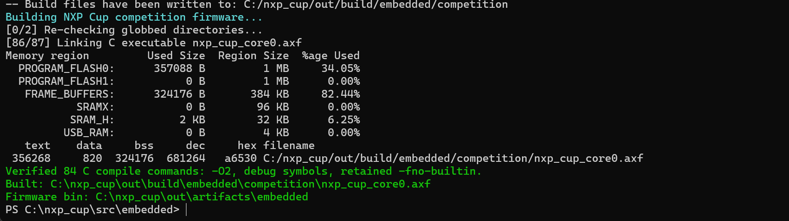
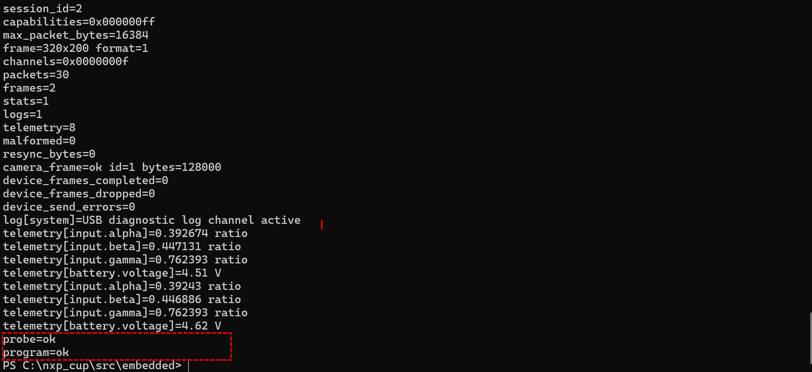
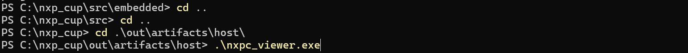
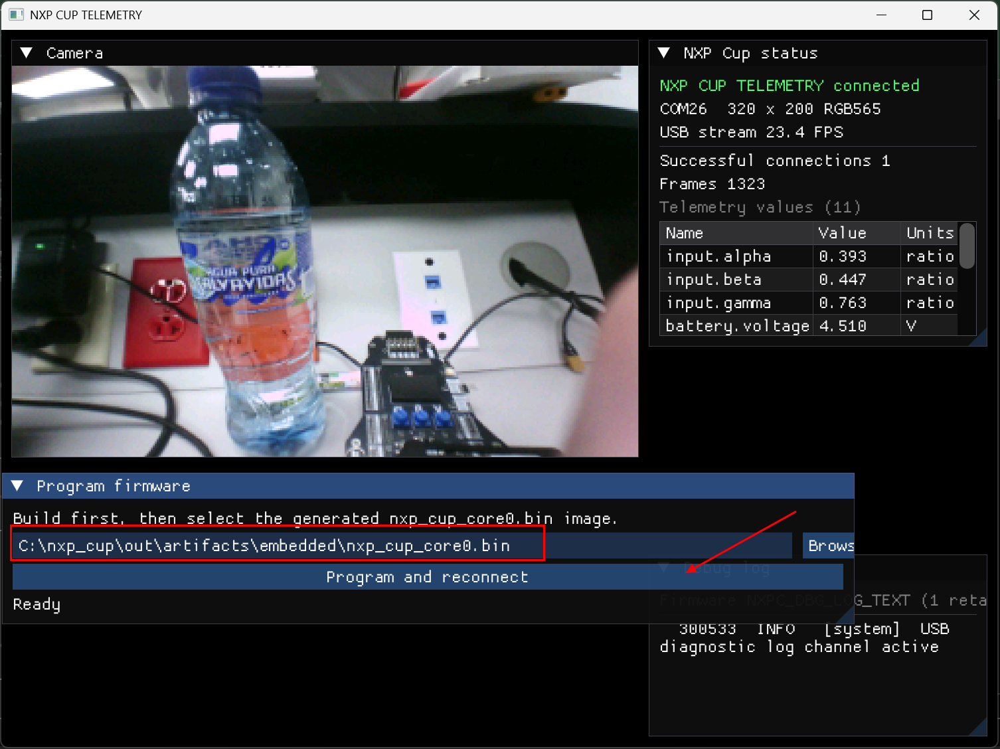
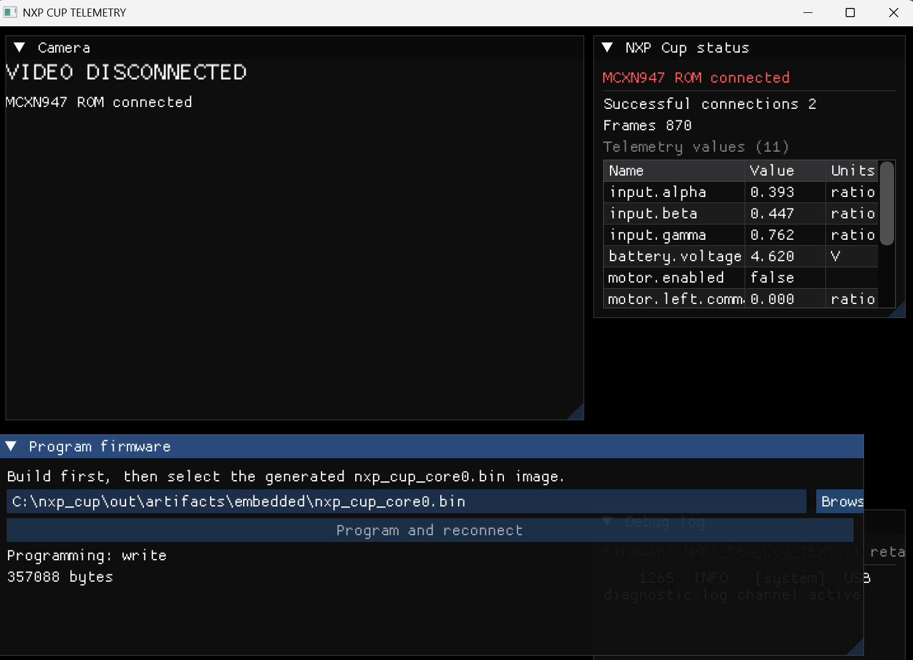
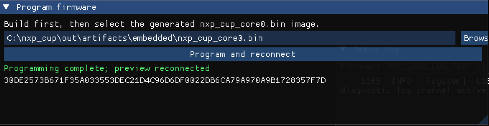

This is the simple, normal path to build, program, and run the competition
firmware on the FRDM-MCXN947. Type every command in a PowerShell tab in Windows
Terminal, from the repository root—the folder containing
setup.ps1. On a new computer, complete the
Windows setup guide first.
Open the repository folder in Windows Terminal, make sure the tab says PowerShell, and open the entire folder in Visual Studio Code:
code .
Run setup once on a new computer. It is safe to run again; verified tools are reused.
.\setup.ps1
Continue when the terminal shows Setup Complete.
.\src\embedded\build.ps1
A successful build creates:
out\artifacts\embedded\nxp_cup_core0.bin out\artifacts\embedded\nxp_cup_core0.axf
The BIN file is the normal ROM-HID programming image. Fix any build error before continuing. Later builds are normally faster because Ninja rebuilds only the files affected by your edits.

Use the normal command above for the everyday edit and build loop. It keeps
the CMake configuration and lets Ninja rebuild only what changed. Use a clean
build when you moved a repository that already contained an out\build
cache, changed compilers, or suspect stale build state:
.\src\embedded\build.ps1 -Clean
A fresh clone does not require -Clean; its first normal build has
no previous cache.
.\src\embedded\flash.ps1
This command uses the installed nxpc_tool.exe host tool. It asks
the running firmware to enter ROM-HID safely, validates the BIN file, erases,
writes, verifies, resets, and waits for the application to reconnect. Do not
unplug the USB cable while programming is in progress.
The happy path finishes with program=ok. J-Link is not required.

probe=ok and
program=ok..\out\artifacts\host\nxpc_viewer.exe

out\artifacts\host. This screenshot navigates into that folder
before launching it; the one-line command above does the same thing from the
repository root.The viewer shows camera frames and telemetry after the board reconnects.

The generated firmware normally lives here:
out\artifacts\embedded\nxp_cup_core0.bin
If the firmware field is blank or points somewhere else, click Browse and select that BIN file. Then:


Use either the viewer button or flash.ps1 for a programming run,
not both at the same time.
# Edit test_mode.c or race_mode.c in Visual Studio Code .\src\embedded\build.ps1 .\src\embedded\flash.ps1
If the happy path fails, use the setup and troubleshooting guide for permissions, connection checks, and physical ROM recovery.